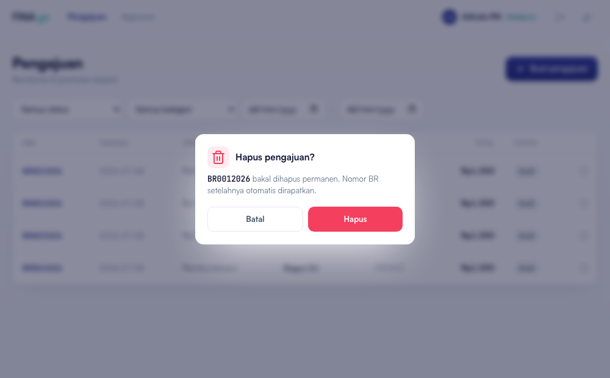

Saat menekan tombol Hapus pada daftar pengajuan, muncul pesan kesalahan berikut dan pengajuan gagal terhapus:
Data pengajuan pada aplikasi sudah cukup banyak (lebih dari 40 baris). Ketika sebuah pengajuan dihapus, sistem sekaligus merapikan ulang nomor BR agar tidak ada nomor yang bolong — sehingga dalam satu proses sistem mengirim puluhan perintah ke database sekaligus.
Layanan server yang dipakai (Cloudflare) membatasi jumlah perintah dalam satu proses. Karena datanya banyak, batas tersebut terlampaui, server menghentikan proses dan mengembalikan pesan “Internal Server Error” — yang di sisi aplikasi terbaca sebagai “Unexpected token …”. Karena sifatnya bergantung pada jumlah data, kendala ini tidak muncul saat data masih sedikit dan baru terasa setelah data bertambah banyak.

Perbaikan telah diuji langsung pada data produksi (42 baris): penghapusan berhasil tanpa kesalahan berhasil dan penomoran BR tetap rapat/berurutan. Perubahan sudah diterbitkan ke produksi — silakan muat ulang halaman aplikasi, tombol Hapus sudah dapat digunakan kembali seperti biasa.